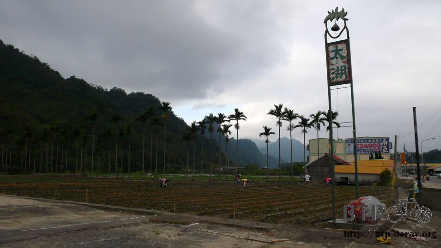

離家出走
一口氣騎了兩百公里，就算不會累也是夠瞧的了，堅持寫完遊記才睡覺的結果，就是拖到凌晨三點才得以閉上眼睛。
心裡想說反正明天只是要騎去台中而已，路線跟今天相比短太多了，大概一百公里就可以騎到。
騎乘的距離短，連帶的騎乘的時間也跟著縮短，既然如此那就不需要趕路，所以早上賴著不想起床。
熬夜加賴床，等睡到滿足之後已經中午十一點，有點傻眼...睡的未免太晚了一點，該不會環島第二天就要休息一日吧？
從住的地方往外看，整個很藍天白雲，配上強勁的風勢，幸好我要去的方向是南邊，這樣一來就是順風，今天是個完美的好天氣。
有點太陽但是不曬、有點雲但是不會陰沉，要是今天不賴床的話，大概一個上午大概就能騎到台中了。
既然醒來的時間是中午，那就吃完飯再出發。
跟昨天的晚餐一樣，都是米莎莎煮的，把各式各樣的青菜、火鍋餃、烏龍麵、泡麵用剩的調味湯包全部丟進去煮，簡單同時超級好吃的！
兩個人合力嗑掉了一整鍋，連湯汁都沒剩。
昨天穿髒的衣服已經洗好曬乾，濕搭搭的鞋子吹了一晚的電風扇也恢復乾燥，收拾一下行李就準備出發。
昨天用的那兩個包包是BTP就用到現在的，基本上很好用，但是跟這個快拆式的貨架很不合。
騎車的時候只要稍微震動到，包包的下緣就會磨擦到後輪鋼絲，發出刺耳的聲音和咚咚的震動感。
一路這麼遮騰下來，包包的下緣都已經磨損起了毛邊，更讓我擔心的是後輪的鋼絲會不會被包包給撞斷。
以這樣的狀況要環島太受罪了，所以決定換一個包包，從家裡翻出一般的行李手提包，將東西分類裝進去，大小剛好。
學夏代把包包放在貨架的正上方，如此就不會去摩擦到後輪，用鬆緊扣帶固定住，非常的牢固。
這個手提包並不防水，也沒有內建防水袋，特別還找了一個超大的塑膠袋，下雨的時候就可以整個裝進去。
拖鞋跟帳棚則綁在包包外面，中午出發的時候還有太陽，拿出太陽能板想試著充電用用看。
綠色的那一塊就是太陽能板，對折之後體積很小，不佔空間方便收納，攤開之後綁在包包上，有太陽就會自動充電到內建的電池中。
接著可以用USB連接線直接供電給iPod或是GPS使用，也可以配上轉接線將手機充電。
感覺蠻好用的，但是太陽一下子就消失，所以沒辦法測試，希望往南部走可以看到大太陽露臉。
一出發先從住的地方往竹東騎，找到台三線之後，今天就算成功一大半了，接著只要沿著台三線往南一直騎就可以。
上次環島的時候，西部這一段我走台一線，整段路從高雄一路悶到台北，真是超級無聊的一條路。
這次換走台三線，經過的城市都是比較小的山中鄉鎮，像是客家菜很好吃的北埔，或是出產草莓的大湖等等。
台三線很好騎車，道路雖然看起來像是山路，但是並不陡峭，車流量也少，也沒有砂石車會走這裡，騎起車來很輕鬆。
山裡的空氣很新鮮，邊騎車邊大口呼吸空氣，眼睛則可以好好的欣賞美麗的山野和河流。
走台三線最先經過的就是北埔鄉，之前跟米莎莎特別到這裡來吃客家菜，假日的時候很多新竹人都會開車到這邊玩，買些新竹特有的名產。
有人說，新竹市住的都不是新竹人，而是外地到新竹科學園區來上班的人加上外籍勞工，真正的本土新竹人都住在新竹縣，
像是竹北、竹東、竹南、南寮還有現在經過的北埔。
路上看到店家在賣文旦，數量很多堆了好幾個小山，店裡還擺了大小不一的佛像，奇特的混合式經營。
這一條就是台三線，跟著藍色的標誌騎就不會迷路，順利的話可以一路騎到高雄去，當然如果怕被堵到的話，半途換走其他路也沒問題。
這一路上經過很多鄉鎮，名字對我來說都很陌生，由於坐落的位置屬於山區，那自然要有些什麼特色才能吸引遊客到此觀光。
有些地方產咖啡，有些則生產梨子，用糖給醃漬起來，看起來就是一整顆的梨子蜜餞，其他還有草莓、文旦、溫泉等。
騎著騎著路旁突然就冒出一條河，水量一般，河床都是石頭，水質看起來蠻乾淨的。

沿著這條不知名的河慢慢騎，出發的時候都已經過了中午，如果今天不要夜騎的話，了不起只能騎上六個小時，這樣就不會累到哪裡去。
換了包包之後，現在的我看起來就像這樣，貨架上綁著一個手提包，看起來有點搖搖欲墜，請別擔心～我綁的很牢固。

米莎莎買了很多各式口味的餅乾，行李從空洞突然變的很充實，露營的裝備則只剩下帳棚，睡墊決定不帶了。
帳棚可以用來阻擋蚊子，在台灣露營是很重要的東西，藍白拖也歸隊了，水壺則只帶一個，喝不夠的話沿路很多地方都可以去裝水。
這樣看起來非常的輕裝，我自己是覺得很不像單車環島的配備，少了馬鞍包就沒有那種調性。
現在看起來比較像是離家出走的少年。
台灣說大不大說小不小，兩千多萬的人口確實的生活在這塊土地上，從數字來看顯得有點擁擠，但還是有很多地方可以感受到清靜的生活。
騎在台三線的感覺跟台一線截然不同，西部給我的感覺一直都是比較發展，水泥森林取代了原本的美麗的好山好水。
只能說我誤會很大，這條路的景色說明了台灣西部有著各式的樣貌。
經過幾個零星的隧道，長度並不深，而且都有雙線道，就算後方有車輛經過也不會被驚嚇到。
台三線的景色很漂亮，道路規劃的也很好，馬路寬而且又有路肩讓單車騎士可以安心騎車。
一路從北埔開始看到很多騎單車的人，既然遇到了就不要做賊心虛，點頭揮手互相打個招呼 :D
很明顯有人工整治過的河川，河床設計成像是階梯般的形狀，一格一格往下，好像在沉澱些什麼東西？
之前去過日本京都的嵐山，山勢不高但是很漂亮，號稱是『春櫻、夏綠、秋楓、冬雪』，四季都有不一樣的妝容。
其實台灣的山勢每一座都很綠意盎然，大概大家太常看到綠色的山景，所以已經麻痺，覺得這沒什麼大不了的。
有機會親自走過荒漠和戈壁灘，和那死寂的荒蕪相比，一座綠色的山已經是美不勝收的絕佳景色。
這邊的河床就比較自然一點，河岸兩邊有人工的河堤，但河床則維持原貌，路上經過的店家在賣溪哥、溪蝦，大概就表示河裡可以釣到這些吧。
經過了一些很陌生的地名，像是獅潭、三灣，之後出現了一個我有聽過的鄉鎮，大湖鄉。
這就代表我不知不覺從新竹騎到了苗栗，中間沒有縣界的指示牌，距離指示牌倒是很勤勞的每五百公尺或是一公里就放一個。
大家都知道大湖最有名的是什麼，嬌豔欲滴、香甜好吃的草莓。
可惜來的時候還不是草莓的季節，田裡都還是剛種沒多久的秧苗，還要過幾個月才可以吃的到。
這邊有好多的草莓園，大家取的名字都很有趣，像是大粒果園或是照片中的太湖，跟大湖相比只多了一點，猛一看還以為是地標咧。

不同的田園，相同的是有很多農民都勤勞的在田裡工作，以求有好的收成。
這一棟外觀紅紅的是農會，蓋的豪華又氣派，想必裡面一定銷售各式各樣的草莓製品。
這一路看過來，只要跟草莓沾的上一點邊的都有在賣，包括有點噁心的草莓香腸=..=
離開大湖之後差不多就快五點了，再往南騎個二十公里就會到東勢，這地名相當耳熟，但一時還想不起來它是為什麼而出名？
一整天都沒什麼太陽，陰陰涼涼的天氣很舒服，天黑前不知道騎不騎的到東勢？
沒有掛牌子的河流，很想知道它的名字，這邊的景色比起國外一點也不差，還有台灣自己的風味，沿路都是菜園。
看這豐沛的水量，我想這應該不是河流，而是個湖泊或是水庫。
因為天候的關係，都拍不出水色湛藍的照片，雖然水質很乾淨，但是拍出來就是黑黑的感覺。
過橋的時候換一個角度看這個大湖泊，天空已經是夕陽西下，大大的台三線標示跟一百四十九公里的距離指示牌。
右邊那座橋就是上面那張照片拍攝的地點，天天都在發現台灣我所不知道的美景，騎車可以欣賞這麼棒的好山好水，台三線讚啦～
雲一直都是像這樣子的狀態，遮蔽了大半的天空同時盤據在山頭，有點擔心會不會在山區下起大雨來，這次又忘了帶掃晴娘娃娃出門。

雲的顏色還蠻白皙的，不像是雨雲，目前看來只是陰天，很怕隔天就翻臉變成雨天。
六點不到天色又陷入昏暗狀態，搞不清楚自己在哪邊，卓蘭？東勢？
西部的山勢都不高，且夾帶著很多的平原，像這樣的鄉鎮一路上經過好多個，入夜之後家家戶戶燈火通明，雖然在山裡頭但卻不偏僻。
天黑的很早，但騎車時間不長，精神好的很，不想那麼早休息，只是騎車旅行完全是依照太陽的作息為依據，日出而作、日落而息。
只是山區的路燈照明不太足夠，不想摸黑騎車就要開始尋找過夜的地點，只要能同時滿足三個條件的話就能住上一夜。
『遮風避雨的屋頂、水龍頭和插頭』，也不一定要全部滿足啦，依情況做適度的妥協。
第一個發現適合過夜的地點是一個歇業的工廠，在牆邊找到電燈開關，按下去還真的會亮，有也屋頂可以遮蔽，只可惜沒水沒電。
在這邊想了好久，遲遲無法決定要不要住在這裡，最後還是決定往下繼續騎，應該會有更好的過夜處。
第二個找到的是一個沒有門的倉庫，地點在馬路下頭，從外面看起來還挺不錯的，但是連個燈也沒有，同樣的也沒水沒電。
又一個不適合過夜的場所，難道是我的要求太高了嗎？
接連兩個地方都決定不落腳，那只好摸黑騎在山路，利用路邊的水龍頭簡單的搓洗了臉跟手，今天就算洗過澡了，下一個地方如果沒水也不打緊。
才六點出頭而已就黑成這樣，實在太誇張了，山裡雖然悠靜，但也不到人煙罕至，就不相信找不到一個滿意的過夜處。
太陽下山之後騎了一個小時的車，總算發現了完美的過夜地點，無人寺廟。
廟裡有燈火照明，還有插頭可以充電，一時找不到水龍頭，沒關係，反正已經洗過臉了，小小的廟沒有人顧，今天就決定睡這邊。
抵達寺廟的時候才七點出頭而已，外面黑壓壓的感覺簡直像是深夜十一點。
雙手合十跟神明拜拜，請他們開恩收留我一晚上。
寺廟的桌椅都有一層厚厚的香灰，牆壁上有插頭可以使用，寫完遊記再睡覺的感覺還是比較妥當的，不會有一種事情沒做完的感覺。
除了路旁偶爾開過的車輛噪音之外，本來應該是很安靜的寺廟，待在裡面寫遊記卻一刻也不得安寧。
馬路對面的人家很大聲的唱著卡拉OK，而且是很吵又不好聽的那種，希望住在山區的人家早一點睡覺，我可不想整個晚上聽你們唱歌。
在國外旅行想睡教堂都沒辦法，永遠都是大門深鎖，回台灣之後，輕而易舉的就找到了寺廟過夜。
還好有帶帳棚同行，山區的蚊子果然很煩人，穿著短褲騎車的我，騎完一圈之後可能兩腳都是紅豆冰。
今天早一點睡，明天不賴床了，努力一點看能不能騎到台南吃小吃。(流口水)
繼續閱讀：10.14 震不垮的土地